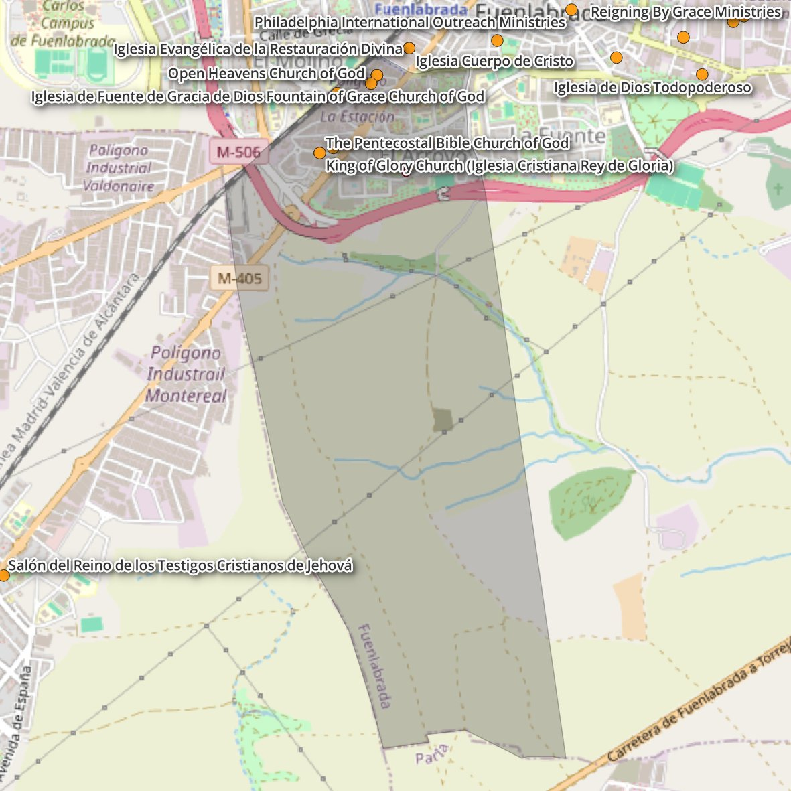
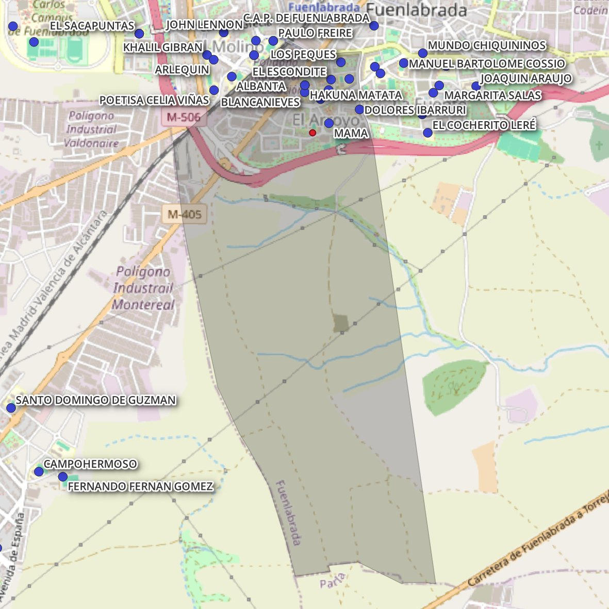

Puntos de interés en el territorio parroquial
Parroquia Nuestra Señora de Fátima (Fuenlabrada) · Arciprestazgo de Fuenlabrada
Entidades religiosas no católicas

10 entidades religiosas no católicas en el territorio de la parroquia.
Evangélicos (9)
- Iglesia de Fuente de Gracia de Dios Fountain of Grace Church of GodCalle Aneto 15, Fuenlabrada
- Iglesia del Evangelio Cuadrangular (Centro Cristiano Vida Nueva)Calle Everest 11 Polígono Casia, Nave 5, Fuenlabrada
- Iglesia Evangélica Centro de Salvación de PentecostésCalle Everest 9, Fuenlabrada
- Iglesia Evangélica Los Redimidos de Dios (Redeemed Christian Church of God)Calle del Monte Perdido 3, Fuenlabrada
- King of Glory Church (Iglesia Cristiana Rey de Gloria)Calle del Monte Blanco 14, Fuenlabrada
- Mountain of Fire & Miracles MinistriesCalle Everest 10b Polígono la Casilla, Fuenlabrada
- Omega Fire Ministries - OFM (Home of Favour)Calle del Monte Blanco 18, Fuenlabrada
- Open Heavens Church of GodCalle Aneto 13, Fuenlabrada
- The Pentecostal Bible Church of GodCalle Monte Blanco 16, Fuenlabrada
Musulmanes (1)
- Centro Islámico de Fuenlabrada La Gran MezquitaCalle Aconcagua 10, Fuenlabrada
Fuente: Registro de Entidades Religiosas del Ministerio de la Presidencia, Justicia y Relaciones con las Cortes. Situación en el mapa: dirección geocodificada con CartoCiudad (IGN) o Nominatim (OpenStreetMap).
Centros educativos

6 centros educativos en el territorio de la parroquia (público: 5, privado: 1).
| Centro | Tipo | Titularidad | Domicilio | Web |
|---|---|---|---|---|
| ANTONIO MACHADO | Colegio de educación infantil y primaria | Público | Calle de la Comunidad de Madrid, 4, 28944 Fuenlabrada | Página web |
| AULA 3 | Colegio de educación infantil y primaria | Público | Calle de las Panaderas, 18, 28944 Fuenlabrada | Página web |
| DOLORES IBARRURI | Instituto de educación secundaria | Público | Calle de los Arados, 9, 28944 Fuenlabrada | Página web |
| EL ESCONDITE | Escuela infantil | Público | Calle de las Panaderas, 12, 28944 Fuenlabrada | Página web |
| HAKUNA MATATA | Escuela infantil privada | Privado | Paseo Valmoral, 8, 28944 Fuenlabrada | Página web |
| MANUELA MALASAÑA | Colegio de educación infantil y primaria | Público | Calle de los Arados, 10, 28944 Fuenlabrada | Página web |
Fuente: registro de centros educativos de la Comunidad de Madrid. Solo se recogen los centros de alta.